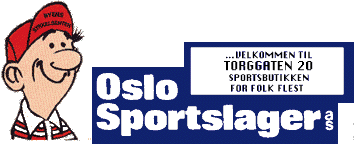
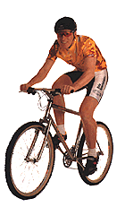

|
 TELEFON 22 20
59 85 | ||
 | SPESIALTILBUD | |
|
Everest Rocky, 95 mod. Shimano XT utstyr Norgescup og NM-vinner 95 | Nå 7990,- | |
|
Everest Climber 95 mod. Shimano Deore LX utstyr Easton Alu. ramme | Nå 5390,- | |
|
Everest Husky 95 mod. Shimano Alivio Like god i marka som i byen Komplett utstyr. Dame/Herre | Nå 2600,- | |
|
DBS Killimanjaro Shimano 21gir Komplett utstyr. Dame/Herre 4295,- | Nå 2990,- | |
|
DBS EVEREST MERIDA GT SCOTT KLEIN COLNAGO | ||